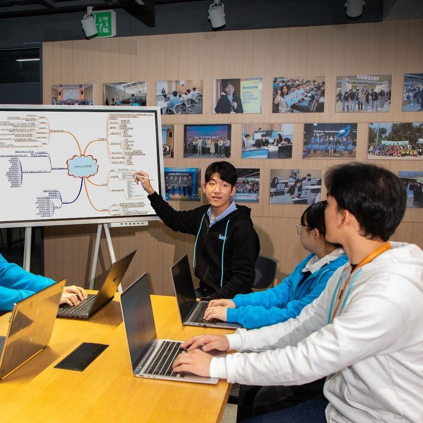
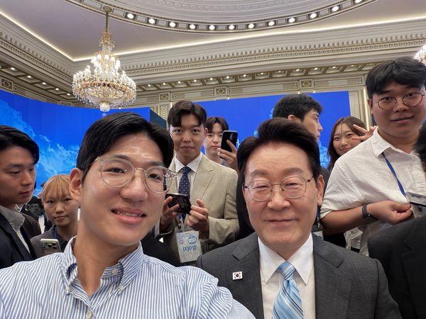

01AI Strategy & Planning
AI 전략기획
흩어진 시장·업무 데이터를 모아 무엇을 먼저 할지, 무엇을 AI에 맡길지 정하는 일. 정비사업 용역비 수집으로 시장 단가 비교와 사업성 검토의 기준선을 만들었고, VOC 트리아지에서는 무엇을 리스크로 볼지의 판단 기준을 설계했습니다.
Seoul · Portfolio 2026
AI Strategy & Planning
AI 전략기획 · 법무법인 경국 — Strategy · Automation · Data
데이터로 판단의 근거를 만들고,
AI로 실행의 속도를 만듭니다.
AI로 풀 문제를 정의하고, 자동화 시스템을 직접 구현해 실제 업무에 적용합니다.
At a Glance — 한눈에 보는 기록
01 — Profile



01 · Profile김유빈 · Yubin Kim — 법무법인 경국
02 · SSAFY 13기프로젝트 아키텍처 발표
03 · Youth Day 2026청와대 청년의날 — 대통령과 함께
02 — Core Competencies
AI 전략기획을 중심에 둔 역량 구조
전략은 무엇을 먼저 할지 정하는 일이고, AI는 그 결정을 빨리 실행하는 도구입니다.
중심축은 AI 전략기획 · AI 자동화 · 데이터 세 가지입니다. 마케팅·강의·도메인 지식은 그 판단을 정확하게 만들고 조직에 전달하는 보조 역량입니다.
Core — 핵심 역량
흩어진 시장·업무 데이터를 모아 무엇을 먼저 할지, 무엇을 AI에 맡길지 정하는 일. 정비사업 용역비 수집으로 시장 단가 비교와 사업성 검토의 기준선을 만들었고, VOC 트리아지에서는 무엇을 리스크로 볼지의 판단 기준을 설계했습니다.
사람이 반복하던 판단의 앞단을 AI에 맡기고, 사람은 기준을 정하는 자리에 남깁니다. SSAFY·서울대 AIED에서 구조를 익혔습니다.
공공데이터 API와 Google Workspace를 의사결정 가능한 화면으로 번역하고 직접 배포합니다. 전략이 감이 아니라 근거 위에 서도록 데이터 구조를 먼저 설계합니다.
Supporting — 보조 역량 · 눌러서 보기
KREMA 4기의 세그먼트 전략과 생성형 AI 제작 역량으로 전략을 시장에 닿는 언어로 옮깁니다.
서울대 AIED 4기에서 교수법을 체화하고, 실무에서 만든 시스템을 강의 모듈로 옮깁니다.
법무법인 경국의 송무·사무, 건국대 스마트건설의 부동산 이해, 청년 정책 거버넌스의 공공 감각이 판단의 바탕입니다.
Strategy Cases — 기획 판단의 기록
직접 만든 세 개의 시스템에서 같은 일이 반복됐습니다. 사람이 하던 일이 도구로 넘어갔고, 그때마다 사람이 남아야 할 자리가 하나씩 또렷해졌습니다. 그 자리가 전략기획입니다.
실지조사 절차와 감정평가·공간정보 관련 조문, 지목 28종을 교재로 읽고 외우던 학습.
3D로 옮긴 서울을 걸으며 의뢰 수임부터 등기촉탁까지 5단계를 직접 수행하고, 조문 카드와 지목을 장소에서 수집.
어떤 절차를 어떤 순서로 밟아야 평가가 성립하는지, 어느 조문을 어느 현장에 붙여야 기억되는지는 감정평가 실무를 알아야 설계할 수 있습니다.
Playable — 직접 만든 것을 직접 해보기
감정평가 실무를 그대로 옮겼습니다. 절차를 설명하는 대신 절차를 걷게 만들었습니다.
담당자가 메일함을 직접 확인하며 사안의 우선순위를 판단하던 업무.
Workspace API가 실시간으로 데이터를 수집하고, 분류 알고리즘이 1차 선별을 수행.
무엇을 리스크로 볼지 정하는 건 결국 사람 몫이고, 그 기준은 법무 감각에서 나옵니다.
흩어진 용역 입찰 공고를 사이트마다 찾아 단가를 옮겨 적던 업무.
크롤러가 정기적으로 공고와 용역비를 수집·정형화해 비교 가능한 데이터셋으로 축적.
어떤 항목을 표준 필드로 삼아야 사업성 검토에 쓰이는지는 시장을 알아야 정할 수 있습니다.
세 번 다 사람이 하는 일은 같았습니다 —
도구에 무엇을 시킬지 정하는 일.
기준을 세우는 사람과 그것을 실행까지 옮기는 사람이 다르면 속도가 죽습니다. 둘을 한 사람이 하도록 준비해 왔습니다.
03 — Selected Works
AI 전략 · 자동화 프로젝트
직접 문제를 정의하고 구현해 배포하거나 사내 업무에 적용한 시스템 4건입니다. 데이터 대시보드와 생성형 AI 콘텐츠 작업은 아래에서 따로 펼쳐 볼 수 있습니다.
Edition 01
광화문에서 잠실까지 서울을 직접 걸으며 의뢰를 수행하는 3D 학습 게임. 의뢰 수임 → 현장조사 → 지적측량 → 토지이동 → 등기촉탁의 5단계를 그대로 따라가고, 조문 카드 24장과 지목 도감 28종을 장소에서 수집한다. 감정평가에 관한 규칙·공간정보관리법·건축법·민법 조문을 현장 상황에 붙여 기억하도록 설계.
기획 포인트법조문을 글이 아니라 장소로 기억하게 만드는 것이 설계의 목표 — 서울의 실제 시간과 햇빛 아래에서 조사 절차를 몸으로 익힌다.
Edition 02
청약홈 분양공고와 LH 임대공고를 공공데이터 API로 수집해, 지역·주거비·가구 조건을 3단계로 입력하면 지금 지원할 수 있는 후보를 정리해 주는 소비자 서비스. 관심공고 저장·마감 알림과 운영용 CRM(매칭·고객·물건 관리)까지 설계·구현.
기획 포인트자격·예산·선호 적합도·마감 긴급도를 한 점수로 섞지 않도록 분리 설계 — 미확인 자격은 불충족으로 단정하지 않고, 당첨 확률은 산출하지 않는다.
Edition 03
대통령 동정·대통령실·정부 정책·국무회의와 국회, 증시·환율·부동산·산업까지 국정과 경제를 한 화면에 모은 상황판. 공개 뉴스 RSS와 시세를 서버리스 함수가 모아 섹션별로 배정하고, 중복 기사를 걸러 언론사 원문 사진과 함께 보여준다. 섹션 필터·검색, 지수 추이 스파크라인, 라이트·다크 모드 지원.
기획 포인트수집이 실패해도 화면이 비지 않게 — CDN 20분 캐시와 stale-while-revalidate로 즉시 응답하고, 실패하면 저장된 스냅샷으로 대체. 포털은 기사를 옮겨 실을 뿐 매체가 아니므로 출처·언론사 수에서 뺐다.
Edition 04
"지금, 어떤 마음이신가요?"에서 시작해 마음 상태·주제별로 성경 말씀과 인문학·철학의 문장을 이어 주는 서재형 PWA. 오늘의 말씀, 말씀·인문학 서재, 묵상 노트·기도 제목·말씀 암송·통독 진도를 쌓는 '나의 성소', 마스코트 등불이(시편 119:105)가 안내하는 상담 챗봇까지 설계·구현.
기획 포인트챗봇이 위기 신호를 감지하면 해석·성찰 대화를 즉시 멈추고 109·1577-0199 등 24시간 상담 기관을 먼저 안내 — 입력 문장은 저장하지 않고 감지 사실만 남긴다.
Edition 05
Google Workspace API를 연동하여 고객 피드백을 실시간으로 집계하고, 자체 분류 알고리즘으로 업무 우선순위를 자동화한 백오피스 대시보드.
기획 포인트무엇을 리스크로 볼지 분류 기준을 먼저 정의하고, 1차 선별만 알고리즘에 위임.
Edition 06
네이버웍스(NAVER WORKS) 메일 API와 연동하여 급여명세서의 생성과 발송을 자동화한 사내 업무 프로그램. 반복되던 급여 명세 발송 절차를 표준화하여 처리 시간을 단축하고 오류 가능성을 축소.
기획 포인트반복되던 발송 절차를 표준화해 처리 시간을 줄이고 오류 가능성을 축소.
Edition 07
정비사업 정보 플랫폼 '누리장터'에서 조합 대상 용역 입찰과 용역비 데이터를 자동으로 수집하는 크롤링 프로그램. 흩어진 공고를 정기적으로 수집·정형화하여 시장 단가 비교와 사업성 검토를 위한 데이터셋을 구축.
기획 포인트시장 단가 비교와 사업성 검토에 바로 쓰이는 필드 구조로 데이터셋을 설계.
Edition 08
청약홈 OpenAPI로 분양정보·지역별 경쟁률·당첨자 가점 통계를 모으고, AI 당첨 확률 계산기와 청약 핫플레이스 지도를 더한 시장 대시보드.
기획 포인트시장 판단에 필요한 지표만 골라 나란히 배치 — 무엇을 병렬할지가 곧 분석의 설계.
Edition 09
GPT Image-2, Suno AI, ElevenLabs를 결합하여 2026 전국동시지방선거 결과를 분석·시각화한 인스타그램 카드뉴스 6종과 내레이션 영상. 사회학적 분석을 2030 세대의 소비 포맷으로 옮긴 생성형 AI 미디어 작업.
Edition 10
Google Vids의 Veo 3 모델을 활용하여 주거 브랜드 '르엘 성수'의 공간 가치를 영상 언어로 구성한 브랜드 필름. 텍스트 프롬프트만으로 영상을 생성·편집하여 부동산 영상 제작 과정을 간소화.
Edition 11
메종 루이비통의 헤리티지와 장인정신을 절제된 무드의 시네마틱 광고로 재해석한 브랜드 캠페인 필름. 텍스트 프롬프트 기반의 생성형 AI만으로 럭셔리 광고 특유의 질감과 격조를 구현.
Edition 12
복수의 생성형 AI 도구를 활용하여 부동산 청약 데이터와 플랫폼 사용성을 대중이 이해하기 쉽도록 구성한 영상·오디오 브랜딩 프로젝트.
04 — Experience
이력 — 실무와 전문교육
Highlight — 2026
청년 대표로 초청되어 ‘2026 청년의 날 오픈마이크’ 현장에 참석했습니다. 청년 정책의 방향과 현장의 과제를 국정 최고 의사결정 단위에서 직접 듣고 교류한 기록입니다.
사진 ⓒ연합뉴스 · 방송 화면 ⓒ전주MBC · 현장 사진 직접 촬영
현장 사진 전체 보기Professional
송무·사무 실무를 담당하며 반복 업무를 진단하고, 급여명세서 자동 발송과 정비사업 용역비 자동 수집 프로그램을 기획·구현해 사내 운영에 적용.
AI · Data Education
인공지능 메커니즘의 비즈니스 도메인 최적화 적용, 구조화된 프롬프트 엔지니어링 아키텍처의 이해와 교수법 체화.
소프트웨어 아키텍처와 인공지능 알고리즘을 실무 프로젝트 중심으로 학습하여 엔지니어링 역량을 내재화.
인공지능 기반의 부동산 시장 데이터 분석과 표적 세그먼트 도출을 학습하고, 매체별 디지털 마케팅 전략 수립 및 자동화 기획 역량을 습득.
금융과 기술이 접합하는 지점에서 핀테크 산업 구조와 디지털 금융 서비스 설계 원리를 학습하고, 데이터 기반 금융 도메인으로 역량의 범위를 확장.
BIM 설계 데이터 해석과 드론 측량, 건설 자동화 워크플로우를 실습 중심으로 다루며 부동산·건설 도메인을 데이터의 언어로 읽어내는 융합적 관점을 정립.
Leadership & Public
서초구 청년 정책 거버넌스의 운영위원회 부위원장으로서 분과 의제 설정과 위원회 운영을 총괄하고, 현장의 목소리를 제도로 잇는 민관 협력을 주도.
대통령이 주관한 청년의날 기념행사에 청년 대표로 초청되어 참석. 청년 정책의 방향과 현장의 과제를 국정 최고 의사결정 단위에서 직접 청취하고 교류.
〈2026 세대·젠더 분야 현장형 국민대화 국민 대토론회〉(2026. 9. 29 · aT센터) 자산 분야 트랙에서 청년 미래배당펀드팀으로 ‘청년 초과세수 미래배당펀드’를 제안·발표. 일회성으로 소진되는 초과세수를 청년 세대가 함께 불리는 자산으로 전환하는 구조를 설계.
국무조정실 온라인 청년참여단으로서 청년 정책 과제에 대한 의견 수렴과 정책 제안에 참여하며, 온라인 공론장을 통해 청년 세대의 목소리를 정부 정책 과정에 전달.
공공 영역의 미디어 콘텐츠를 기획·편집하고 시정(市政) 현안을 분석하여 정책 제안 과정에 참여.
SSAFY 공식 홍보 앰배서더로 교육 과정과 성과를 콘텐츠로 알리고, 지원자 대상 커뮤니케이션과 대외 홍보 활동을 수행.
독일 베를린에서 유럽 선진 기업의 에너지·인프라 운영 체계와 국제 실무 표준을 조기에 접한 경험.
Honors
軍·官·學 주관 2023 강원열린군대 스타트업 프로그램 성취도평가에서 팀 Home_Ally로 2위 입상(2023. 12. 31). HVAC 기술에 기반한 리스크 관리 아이디어를 제안하고, 비즈니스 모델의 타당성을 공식 심사에서 검증.
상장 원본 보기기초군사훈련 과정에서 분대의 통솔과 임무 수행 성과를 인정받아 최우수 분대로 선정되었으며, 육군훈련소장(소장)의 상장을 수상.
상장 원본 보기軍 특성화고 현장실습 기간 중 희생정신과 학업성적 우수로 타의 모범이 되어 육군정보통신학교장(준장)으로부터 상장을 수상(2022. 7. 1, 제183호).
Side Practice — Lectures
AI 강의 프로그램
본업은 AI 전략기획입니다. 강의는 실무에서 직접 만들고 운영한 경험을 나누기 위해 별도로 설계한 프로그램으로, 아직 출강 이력은 없습니다. 커리큘럼과 근거를 먼저 공개해 두고, 첫 강의가 진행되면 이력에 연도와 함께 추가하겠습니다.
만들어 본 사람만 가르칠 수 있는 것이 있습니다.
SSAFY 13기의 엔지니어링 훈련, 서울대 AIED 4기의 프롬프트 아키텍처와 교수법, KREMA 4기의 시장 데이터 전략 — 배운 것을 실제로 만들어 운영해 본 뒤에 강의 모듈로 옮겼습니다. 현재 두 트랙, 여덟 과정의 커리큘럼을 설계해 두었습니다.
개념부터 에이전트 설계까지. SSAFY 13기의 엔지니어링 훈련과 서울대 AIED 4기의 프롬프트 아키텍처·교수법을 실무 언어로 옮긴 네 과정입니다.
모델이 어떻게 답을 만드는지 알면, 어디까지 맡길지 판단할 수 있습니다.
서울대 AIED 4기 — AI 교육 전문가 과정
이 과정 의뢰하기좋은 프롬프트는 잘 쓴 문장이 아니라 잘 설계된 구조입니다.
서울대 AIED 4기 — 구조화된 프롬프트 아키텍처
이 과정 의뢰하기아이디어에서 배포까지, AI와 대화하며 실제 도구를 완성하는 과정입니다.
SSAFY 13기 — 소프트웨어 아키텍처 실무 프로젝트
이 과정 의뢰하기모델 자체보다, 모델에 무엇을 쥐여주느냐가 결과를 가릅니다.
GWS · NAVER WORKS API 연동과 크롤링 파이프라인 구축 경험
이 과정 의뢰하기직접 기획·배포해 운영 중인 시스템에서 나온 네 과정. KREMA 4기의 시장 데이터 전략과 현장 산출물을 사례로 다룹니다.
반복 업무를 진단하고, 무엇을 자동화할지 정하는 기준을 세웁니다.
법무법인 경국 — 송무·사무 프로세스 혁신 실무
이 과정 의뢰하기공개된 데이터를 의사결정이 가능한 화면으로 바꾸는 과정을 처음부터 끝까지 다룹니다.
KREMA 4기 — AI 기반 부동산 시장 데이터 분석
이 과정 의뢰하기프롬프트 구조로 영상을 만들고, 톤을 지키는 판단은 사람이 합니다.
KREMA 4기 — 매체별 디지털 마케팅 전략
이 과정 의뢰하기전문적인 내용이 닿지 않으면 없는 것과 같습니다. 전달의 문법을 다룹니다.
서울시민기자단 · 연합뉴스TV · 청년 정책 거버넌스
이 과정 의뢰하기